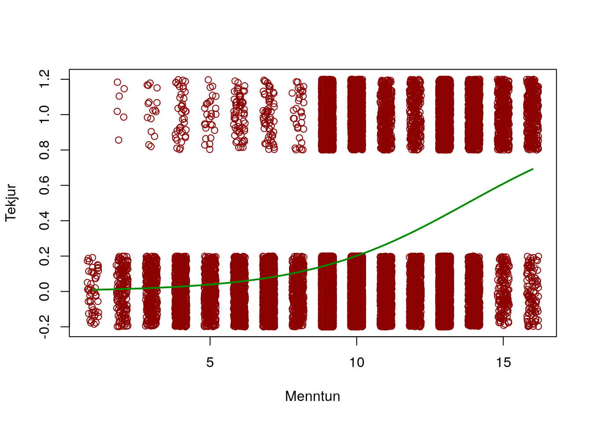

Kafli 2 Aðfallsgreining hlutfalla
2.1 Inngangur
Byggir á línulegri aðfallsgreiningu. Nema þar vorum við að nota samfellda fylgibreytu og eina eða fleiri frumbreytur í líkani þar sem við erum að fjalla um sambandið þarna á milli.
Þegar við erum með fylgibreytu sem er flokkabreyta með tveimur möguleikum þá notum við annars konar tegund aðferðar til að kanna tengslin. Sú aðferð er nefnd aðfallsgreining hlutfalla eða logistic regression uppá ensku.
Mikilvægt er að fylgibreytan er sett upp sem tvíkosta breyta sem tekur aðeins gildin 0 og 1. Þá er einnig hægt að segja að 1 standi fyrir árangur og 0 standi fyrir að misheppnast. Ef við tökum meðaltal af breytu af þessu tagi þá fáum við hlutfall árangurs - þannig að meðaltal af tvíkostabreytu með gildin 0 og 1 gefur okkur alltaf hlutfall þeirra sem eru með 1 í gagnasafninu.
Ef um er að ræða gögn með óháða tvíkosta breytu þá er talað um tvíliða gögn (binomial setting). Það eru fjórar forsendur sem þarf að uppfylla í tilraun til að um sé að ræða binomial setting: 1) hver mæling fellur í einn tveggja flokka sem eru kallaðir success/failure 2) það er endanlegur fjöldi mælinga 3) allar mælingarnar eru óháðar 4) líkurnar á success eru þær sömu fyrir allar mælingarnar - jafnar
Ef tilraunin er með binomial setting, þá er handahófsbreytan X fjöldi successes binomial random breyta og líkindadreifing X er tvílhiða dreifingu (binomial distribution)
2.2 Dæmi um tvíkostabreytur
Sem dæmi um breytur sem eru tvíliða og nota má í aðfallsgreiningu hlutfalla eru:
- staðið eða fall í áfanga
- hvort viðkomandi nái greiningarviðmiðum þunglyndis
- mat á eigin heilsufari (til dæmis, endurkóðað úr fimm punkta kvarða í tvíkosta breytu)
- hvort viðkomandi drekki kaffi eða ekki
2.3 Tvíliðudreifing
Tvíliðudreifing er dreifing á talningu breytunnar X (það er talning á tilvikum þar sem X er 1) undir tvíliðu setting með tvo stika: n og p. n stendur fyrir fjölda mælinga og p eru líkurnar á árangri fyrir hverja einstaka mælingu. Möguleg gildi X eru heiltölur frá 0 til n og er skrifuð X is B(n,p).
Mynd 2.1: Tvíliðudreifingar með mismunandi stikum
Á mynd 2.1 má sjá tvíliðudreifingu með mismunandi stikum. Í efri línunni fyrir miðju má sjá tvíliðudreifingu þar sem stikarnir eru 0.5 og 10 - sem merkir að úrtakið er af stærðinni 10 og líkurnar er 0.5. Þarna sjáum við að hæstu líkurnar eru við fimm - sem merkir að þar sem undirliggjandi líkurnar eru 0.5 þá eru hæstar líkur á að fá 5 árangursrík tilvik í úrtaki 10 tilvika. Til dæmis ef við köstum krónu 10 sinnum og við ætluðum að telja hversu oft landvætturinn birtist, þá myndum við búast við að eðlileg króna myndi fimm sinnum lenda á bergrisanum. En hins vegar sjáum við líka að það er eðlilegt að krónan myndi lenda fjórum sinnum eða sex sinnum á landvættinum þar sem líkurnar á þeim eru ekki langt frá líkunum á fimm sinnum. Með öðrum orðum, það væri ekki ólíklegt að kasta krónu tíu sinnum og í fjórum eða sex tilvikum myndum við fá bergrisann en samt væri um að ræða eðlilegan krónupening.
2.4 Hlutfallslíkur
p er hlutfallið af hópnum sem er með gildið 1 á tiltekinni tvíkostabreytu (eða success). Ef við værum með handahófskennt úrtak af stærðinni n úr þýði þá dreifist fjöldi þeirra sem er með gildið einn (eða success) miðað við binomial dreifingu með parametrunum n og p.
Hlutfallið er þá fjöldi þeirra sem eru með 1 á móti heildarfjölda í úrtakinu. Það merkjum við sem p-hatt þar sem um er að ræða mat á hlutfalli þýðisins á grundvelli úrtaksins.
Þegar við notum aðfallsgreiningu hlutfalla þá notum við hins vegar hlutfallslíkur í stað hlutfalla. Hlutfallslíkur er hlutfallið milli hinna tveggja mögulegu útkoma (það er, hlutfallið milli þeirra sem eru með gildið 1 og þeirra sem eru með gildið 0 á tvíkostabreytunni).
\(hl=\frac{\hat{p} }{1-\hat{p}}\)
Til dæmis gætum við tekið 1000 manna úrtak úr þjóðskrá og myndum spyrja alla hvort þeir hefðu kosið í síðustu kosningum. Í ljós kæmi að 700 þeirra hefðu kosið. Það merkir að hlutfallið er \(\hat{p}=\) 0.7 en hlutfallslíkurnar eru 2.33
Með því að námunda hlutfallslíkur þess að hafa kosið í síðustu kosningum má sjá að kjósendur eru um 2 á móti 1 - fyrir hverja 2 kjósendur var einn sem ekki kaus.
Annað dæmi gæti verið að draga spil af handahófi úr spilastokk. Ef við gerum það þá vitum við líkurnar á að draga spaða eru 13/52 eða 1/4 sem við getum einnig skrifað sem tugabrot 0.25. Hlutfallslíkurnar á því að draga spaða eru 0.33. Hins vegar eru hlutfallslíkurnar á að draga spil af öðrum lit 3 á móti 1.
2.5 Hlutfallslíkur tveggja hópa
Við höfum áður skoðað hvernig hægt er að bera saman tvö hlutföll í úrtaki, til dæmis hvort karlar eða konur séu líklegri til að nota Instagram. Í því tilviki skoðum við muninn á hlutfalli beggja hópa og reiknum öryggisbil utan um muninn. Ef öryggisbilið inniheldur ekki núll þá getum við ályktað sem svo að líklega sé um að ræða mun á instagram notkun í þýðinu.
Önnur leið til að meta hvort kyn tengist líkum þess að nota Instagram er að framkvæma aðfallsgreiningu hlutfalla. Það sem gerir hana enn árangursríkari sem aðferð til að kanna tengsl milli breyta er að hún tekur fleiri en eina frumbreytu. Ennfremur er aðfallsgreining hlutfalla, rétt eins og línuleg aðfallsgreining, sveigjanleg að því marki að hægt er að setja fram sveiglínusamband og samvirkni milli tveggja eða fleiri frumbreyta í líkaninu. A Aðfallsgreining hlufalla hentar hvort sem er fyrir samfelldar eða flokkaðar frumbreytur en fylgibreytan er alltaf tvíkosta og tekur gildin 0 og 1.
2.6 Af hverju ekki að nota línulega aðfallsgreiningu?
Tæknilega séð er hægt að nota línulega aðfallsgreiningu þegar fylgibreytan er tvíkosta en það getur hins vegar dregið dilk á eftir sér. Skoðum dæmi.
Í félagskönnun í Bandaríkjunum er spurt um sjónvarpsáhorf. Þar mætti til dæmis skoða að hvaða marki aldur tengist sjónvarpsháorfi. Í þessu tilviki ætlum við að skoða að hvaða marki aldur tengist því hvort fólk horfi á sjónvarp lengur en 6 klukkustundir á dag.
Samkvæmt gagnasafninu okkar horfa um 24% Bandaríkjamanna í sex klukkustundir eða lengur á sjónvarpið á degi hverjum. Ef við setjum upp línulegt aðfallsgreiningarlíkan þá kemur hins vegar strax í ljós að það býr til spágildi sem geta ekki gengið upp þar sem þau lenda undir núlli - eru neikvæðar. Það má sjá á 2.2 þar sem rauða línan stendur fyrir spágildi línulega líkansins. Eins og sjá má verða spágildi þeirra sem eru 30 ára og yngri neikvæð, en það gengur ekki upp þar sem verið er að vinna með hlutfall. Græna línan á 2.2 sýnir hins vegar niðurstöður aðfallsgreiningar hlutfalla þar sem við sjáum hlutfallslíkur yfir mismunandi aldur.
Mynd 2.2: Samanburður á línulegri aðfallsgreiningu og aðfallsgreiningu hlutfalla
Fyrir utan þennan alvarlega galla kemur það líka fyrir að leif líkans þar sem línuleg aðfallsgreining hefur verið notuð til að reikna samband milli einnar eða fleiri fumbreyta og einnar tvíkosta fylgibreytu, dreifst afbrigðilega með þeim afleiðingum að marktektarpróf sem byggja á líkaninu verða skekkt og gefa ranga mynd af aðstæðum í þýði.
2.7 Aðfallsgreining hlutfalla
Líkanið sem notað er fyrir aðfallsgreiningu hlutfalla lítur úr svona:
\(log(\frac{p}{1-p} ) \beta_{0}+\beta_{1}x\)
Þar sem p er tvíliðu hlutfall (binomial proportion) og x er skýribreyta líkansins. Stikar líkansins fyrir eru \(\beta_{0}\) og \(\beta_{1}\).
Í línulegu líkani eru við að setja upp líkan þar sem meðaltal fylgibreytunnar veltur línulega á frumbreytu líkansins. Í aðfallsgreiningu hlutfalla er þetta meðaltal tekið af p sem er þá fjöldi tilvika sem er með 1 á fylgibreytunni eða fjöldi successess. Í aðfallsgreiningu hlutfalla er markmiðið með líkaninu að finna meðaltal p út frá frumbreytunni x. Eins og við sáum áður þá er tæknilega hægt að gera þetta með línulegri aðfallsgreiningu en það veldur vandræðum þar sem í hvert skipti sem \(\beta_{0}\) tekur eitthvað annað gildi en 0 þá munu há gildi x gefa spágildi (það er, \(\beta_{0}+\beta_{1}\)) sem falla utan mögulegra gilda p, það er falla utan við spönnina frá 0 til 1. Það sem gert er með aðfallsgreiningu hlutfalla er að umbreyta hlutfallslíkunum með náttúrlegum lógarithma.
Þarna er gott að muna hvað hlutfallslíkur eru. Það má sjá hér: 2.4.
En það sem líkanið gerir er að það tekur fylgibreytuna (sem við táknum með y, rétt eins og í línulegri aðfallsgreiningu) og umreiknar hana með náttúrlegum lógarithma og reiknar svo aðfallsgreiningu með þeim frumbreytum sem höfðu verið skilgreindar, það er, x breyturnar. Á mynd 2.3 má sjá mismunandi líkön aðfallsgreiningar hlutfalla þar sem hallatölu líkansins er haldið stöðugri en skurðpunkti þess er breytt þannig að hann nái frá -16 upp í -4. Hins vegar má sjá á mynd 2.4 hvernig tengsl breytanna líta út myndrænt þegar skurðpunktinum er haldið stöðugum en hallastuðlinum er breytt frá einu líkani til annars.
Mynd 2.3: Mismunandi líkön aðfallsgreiningar hlutfalla
Mynd 2.4: Mismunandi líkön aðfallsgreiningar hlutfalla
2.7.1 Hvað er náttúrulegur lógarithmi?
Þegar við tökum náttúrlegan lógarithma af ákveðinni tölu þá er það gert með því að finna í hvaða veldi þarf að setja fastann e til að útkoman verði upprunalega talan. Fastinn e er einnig kallaður tala Eulers og er hún (í styttu formi) 2.7182818 Til dæmis má sjá að náttúrulegur lógarithmi af tölunni 3 er 1.0986123. Það merkir að til þess við verðum að setja fastann e í 1.0986123 veldi til þess að hann verði 3, þar er: 3 \(= e^{log(3)}\)
Eins og áður segir er þetta skilgreiningin á náttúrulegum lógarithma en það er í raun hægt að taka lógarithma með því að nota hvaða jákvæða tölugildi sem er fyrir grunn lógarithmans. Til dæmis er algengt að taka lógarithma út frá grunninum 10. Góður kostur náttúrlegs lógarithma er að ef hann er tekinn af frum- eða fylgibreytu í aðfallsgreiningarlíkani þá er hægt að túlka umbreyttu breytuna á grunni prósentubreytinga. Til dæmis er fylgibreytu hefði verið umbreytt með náttúrulegum lógarithm í línulegri aðfallsgreiningu þá mætti túlka hallastuðul frumbreytu líkansins sem prósentubreytingu fylgibreytunnar.
Umbreytingu með lógarithma er stundum beitt til að temja ódæl gögn, til dæmis þegar forsenda aðfallsgreiningar um línulegt samband frum- og fylgibreyta virðist ekki standast. Við slíkar aðstæður gagnast oft prýðilega vel að umbreyta annað hvort frumbreytu eða fylgibreytu með lógarithma og veltur þá valið oft á því hvort breytan er skekktari.
Ein leið til að hugsa lógarithma er að hann dregur saman gögnin þannig að fjarlægðin milli gildanna á breytunni verður ekki eins mikil. Dæmi um þetta má sjá í töflu 2.1. Í töflunni má sjá að spönn hrágildanna er gríðarleg (frá 2 og uppí 50000) en þegar búið er að taka lógarithma þá eru tölurnar mun meðfærilegri og samþjappaðri þar sem spönnin er frá 0,69 og upp í 10,8. Þetta sama getum við séð þegar við tökum lógarithma af af hlutfallslíkum í aðfallsgreiningu hlutfalla - skalinn þjappast saman en samt þannig að fjarlægðin milli gildanna helst, hún minnkar bara.
| Fyrsta mæling | Önnur mæling | Þriðja mæling | Fjórða mæling | Fimmta mæling | Sjötta mæling | |
|---|---|---|---|---|---|---|
| hrágögn | 2.0000000 | 3.000000 | 7.00000 | 90.00000 | 1000.000000 | 50000.00000 |
| logarithmi | 0.6931472 | 1.098612 | 1.94591 | 4.49981 | 6.907755 | 10.81978 |
Samkvæmt hefðbundinni skilgreiningu er aðeins hægt að taka lógarithma af tölum sem eru hærri en 0 - þannig að undir venjulegum kringumstæðum er ekki hægt að taka lógarithma af núlli eða neikvæðum tölum.
Ef veldisvísisfall (exponential function) er tekið af tölu sem hefur verið umbreytt með lógarithma fæst upprunalega talan aftur. Þannig að \(exp(log(3))=3\).
2.7.2 Uppsetning líkansins
Líkanið sem við vinnum með í aðfallsgreiningu hlutfalla er eins og það sem við notum í línulegri aðfallsgreiningu. Eini munurinn er að spágildin eru ekki lengur meðaltal fyrir mismunandi gildi á frumbreytunni x heldur lógarithmi hlutfallslíkinda fyrir mismunandi gildi frumbreytunnar x í líkaninu.
2.7.3 Áhættuhlutfall
Þegar við fáum niðurstöður úr aðfallsgreiningu hlutfalla þá eru hallastuðlar allir á skala sem byggir á lógarithma hlutfallslíkinda. Það er hins vegar ekki þægilegt að túlka hallastuðla sem eru á þessum skala. Af þeirri ástæðu eru niðurstöðurnar yfirleitt alltaf unnar frekar og áhættuhlutfall reiknað.
Það sem heitir á ensku odds ratio er nefnt áhættuhlutfall á íslensku. Áhættuhlutfall er einfalt að túlka en það er nokkuð frábrugðið frá þeim hallastuðlum sem við erum vön úr línulegri aðfallsgreiningu.
Áhættuhlutfall er reiknað með því að taka anti-log eða veldisvísisfall af hallastuðlum líkansins. Með þessari aðgerð eru áhrif lógarithmans fjarlægð úr hallastuðlunum. Áhættuhlutfall er í raun hlutfallið milli tveggja hlutfallslíka. Spönn þess er frá 0 til óendanlegs. Ef áhættuhlutfallið er 1 þá er það til marks um að engin tengsl er milli breytanna. Ef það er hærra en 1 þá er sambandið jákvætt en ef það er lægra en 1 þá er sambandið neikvætt.
2.7.4 Tegundir frumbreyta í aðfallsgreiningu hlutfalla
Aðfallsgreining hlutfalla ræður bæði við samfelldar og flokkaðar frumbreytur. Sömu reglur gilda um notkun frumbreyta eins og fyrir línulega aðfallsgreiningu: Hægt er að nota samfelldar breytur beint af kúnni í líkanið en fyrir flokkabreytur þarf að ákvarða einn samanburðarhóp sem aðrir flokkar verða bornir saman við.
Þegar niðurstöðurnar eru túlkaðar út frá flokkuðum frumbreytum er það gert á grundvelli þess að miðað við viðmiðunarhópinn þá var sá hópur sem kemur fram í niðurstöðutöflunni með þeim mun hærra áhættuhlutfall að jafnaði eða lægra ef áhættuhlutfallið var lægra en 1.
Ef við værum til dæmis að bera saman kynin þar sem karlar væru kóðaðir sem 1 og konur sem 0 eftir líkindum þess að fá greiddar örorkubætur frá Tryggingastofnun, þá myndi áhættuhlutfallið 0,8 benda til þess að karla væru að jafnaði um 20% ólíklegri en konur til að fá örorkubætur greiddar.
Að sama skapi ef við værum aftur að skoða kynin með sömu kóðun og áður nema út frá líkindum þess að hafa verið sviptur ökuréttindum einhverntíman á ævinni, þá myndi áhættuhlutfallið 1,35 benda til þess að karlar væru að jafnaði um 35% líklegri en konur til að hafa tapað bílprófinu.
2.7.5 Dönsk íbúakönnun
Við erum með gagnasafn frá Kaupmannahöfn þar sem íbúar í borginni voru spurðir um tegundir húsnæðis, samskipti við nágranna sína og ánægju með húsnæði sitt. Það sem við höfum áhuga á að skoða eru tengslin milli þess hversu mikil samskipti svarendur höfðu við nágranna sína og hversu ánægðir þeir voru með húsnæði sitt. Gagnasafnið er fengið héðan: https://data.princeton.edu/wws509/datasets/#copen
Breytan contact var til marks um hversu mikil samskipti svarendur höfðu við nágranna sína. Hún var kóðuð 1 þar sem samskipti voru mikil en 0 þar sem samskipti voru lítil.
Í upprunalega gagnasafninu var ánægja með húsnæðið mælt með þrískiptri breytu sem skiptis í lítið ánægðir, í meðallagi ánægðir og mjög ánægðir. Í greiningunni hér voru þeir teknir úr gagnasafninu sem voru í meðallagi ánægðir. Breytan var svo endurkóðuð þannig að þeir sem voru mjög ánægðir fengu gildið 1 en þeir sem voru lítið ánægðir fengu gildið 0.
Niðurstöður líkansins má sjá í töflu 2.2. Þar má sjá tengsl frumbreytunnar við fylgibreytuna miðað við lógarithma hlutfallslíkinda, staðalvilluna, niðurstöður z-prófs og samsvarandi p-gildi.
| Stuðull | Staðalvilla | z-gildi | p-gildi | |
|---|---|---|---|---|
| Skurðpunktur | 0.04 | 0.09 | 0.48 | 0.63 |
| Samskipti við nágranna | 0.22 | 0.12 | 1.89 | 0.06 |
Í töflu 2.3 má hins vegar sjá þegar búið er að hreinsa lógarithman úr niðurstöðunum og þá kemur í ljós áhættuhlutfallið auk öryggsibilsins fyrir áhættuhlutfallið. Samkvæmt þessum niðurstöðum eru þeir sem eiga mikil samskipti við nágranna sína um 22% líklegri til að vera mjög ánægðir með húsnæðiskost sinn, miðað við þá sem áttu í litlum samskiptum við nágranna. Hins vegar er einnig rétt að skoða öryggisbilið sem bendir til að ekki sé víst að um sé að ræða mun sem á sér stoð í þýðinu þar sem öryggisbil áhættuhlutfallsins inniheldur 1 og eins og við munum þá stendur 1 fyrir engin tengsl milli frum -og fylgibreytu líkansins.
| Frumbreyta | Áhættuhlutfall | Öryggisbil neðra | Öryggisbil efra | Kvarði breytunnar |
|---|---|---|---|---|
| Samskipti við nágranna | 1.24 | 0.99 | 1.56 | Indicator variable |
Mikilvægt er að ef hópum frumbreytunnar hefði verið snúið við (það er, þeir sem voru í miklum samskiptum við nágranna hefðu fengið 0 og þeir sem voru í litlum samskiptum fengið 1) þá hefði áhættuhlutfallið breyst. Þær niðurstöður má sjá í töflu 2.4. Þá má sjá að ef við notum þá sem voru í miklum samskiptum við nágranna sína sem viðmiðunarhóp þá voru þeir sem voru í litlum samskiptum að jafnaði um 20% ólíklegri til að vera ánægðir með húsnæðisstöðu sína, miðað við samanburðarhópinn.
| Frumbreyta | Áhættuhlutfall | Öryggisbil neðra | Öryggisbil efra | Kvarði breytunnar |
|---|---|---|---|---|
| Samskipti við nágranna | 0.8 | 0.64 | 1.01 | Indicator variable |
2.8 Ályktun á grundvelli aðfallsgreiningar hlutfalla
Nú er gott að rifja upp hvernig líkanið fyrir aðfallsgreiningu hlutfalla lítur út:
\(log(\frac{p}{1-p} ) \beta_{0}+\beta_{1}x\)
Þar sem p er tvíliðu hlutfall (binomial proportion) og x er skýribreyta líkansins. Stikar líkansins fyrir eru \(\beta_{0}\) og \(\beta_{1}\).
Það kallar á talsverða vinnu (og helst sérhæfðan hugbúnað) að reikna aðfallsgreiningu hlutfalla í höndunum. Ein undantekning á þessu er ef um er að ræða líkan með einni tvískiptri frumbreytu. Í því tilfelli getum við auðveldlega reiknað hallastuðulinn og skurðpunktinn.
Ef við skoðum dæmið sem við tókum áður út frá dönsku íbúakönnuninni þá líta formúlunar svona út:
- Formúla fyrir aðfallsgreiningu hlutfalla fyrir þá sem höfðu mikil samskipti við nágranna sína
\(log(\frac{p_{samskipti} }{1-p_{samskipti}} )=\beta_{0}+\beta_{1}\)
- Formúla fyrir þá sem höfðu lítil samskipti við nágranna sína
\(log(\frac{p_{lítilsamskipti} }{1-p_{lítilsamskipti}} )=\beta_{0}\)
Út frá þessu sjáum við að matið fyrir skurðpunkt líkansins er það sama og matið á hlutfallslíkum þeirra sem eiga lítil samskipti við nágranna sína. Við sjáum líka að til að reikna mat á hallastuðli líkansins þá þarf að finna mismuninn milli hlutfallslíka hópanna tveggja. Við getum reiknað hlutfallslíkurnar og sjáum að þær eru 0.258574 fyrir þá sem eiga í mikum samskiptum við nágranna og 0.0411273 fyrir hina.
Út frá þessu getum við reiknað hallastuðul líkansins
\(\beta_{1}=\) 0.2174467
Eins og við vitum þá er hann illtúlkanlegur og því viljum við taka antilog af honum. Þá verður niðurstaðan 1.2428992.
Ályktunartölfræði er reiknuð með sama hætti fyrir aðfallsgreiningu hlutfalla rétt eins og fyrir línulega aðfallsgreiningu. Mat á stikum er reiknað fyrir líkanið og staðalvilla er metin fyrir þá.
2.8.1 Öryggisbil
Öryggisbil eru reiknuð á hefðbundinn hátt, nema miðað er við normaldreifingu í stað t-dreifingar, sem er sú dreifing sem miðað er við í línulegri aðfallsgreiningu. Öryggisbil fyrir hallastuðla er: \(b_{1} \pm z^\ast SE_{b1}\)
Fyrir hlutfallslíkur er öryggisbilið reiknað með að umbreyta öryggisbilinu með því að taka antilog af því. Það er gert svohljóðandi: \((e^{b_{1}-z^\ast SE_{b_{1} } }, e^{b_{1}+z^\ast SE_{b_{1} } })\) þar sem \(z^*\) stendur fyrir normal þéttleikakúrvu með svæðið C (sem er öryggisbilið sem miðað er við) milli \(-z^*\) og \(+z^*\).
Þegar um er að ræða hlutfallslíkur þá skoðum við grant hvort öryggisbilið nái utan um 1, þar sem 1 er til marks um að enginn munur sé á hlutföllum hópanna sem við erum að skoða (þegar um er að ræða tvíkosta frumbreytu) eða að engin tengsl séu milli frumbreytunnar og fylgibreytunnar (þegar við erum með samfellda frumbreytu). Ef öryggisbilið inniheldur gildið 1 þá getum við ekki verið viss um að tengsl séu til staðar í þýðinu.
2.8.2 Marktektarpróf
Marktektarpróf eru unnin út frá hlutfallinu milli hallastuðulsins og staðalvillunnar. Oft eru niðurstöður marktektarprófanna gefnar sem veldistölur þessara niðurstaðna (það er, squared niðurstöður). Í þeim tilvikum er um að ræða p-gildi út frá kí-kvaðrat dreifingunni með n-1 frígráðu.
Til að prófa hvort hallatalan sé marktækt ólík 0 (það er, hvort líklegt sé að fá hallatölu af þessum styrkleika ef ekki er um að ræða tengsl í þýði) er eftirfarandi próf framvkæmt:
\(z=\frac{b_1}{SE_{b_{1}}}\)
Þetta gildi er borið saman við z-gildi út frá normaldreifingu. Það er nokkuð flókið að reikna út staðalvillu fyrir stika í aðfallsgreiningu hlutfalla og því látum við hugbúnaðinn um það verkefni.
Þetta próf er kallað Wald próf en í sumum tilvikum reiknar tölfræðihugbúnaður kíkvaðrat próf til að próf hvort um sé að ræða marktækan hallastuðul eða ekki. Það er veltur á því að: \(\chi^2=z^2\)
Þar sem við erum jafnan að vinna með hlutfallslíkur þá breytist marktektarprófið í að verða próf á því hvort hlutfallslíkindin víki marktækt frá 1. Það er, hlutfallslíkindi sem eru 1 er til marks um að enginn munur sé á hlutföllum tveggja hópanna (ef um er að ræða tvískipta frumbreytu). Þess vegna er núlltilgátan í þessu tilviki að hlutfallslíkindin eru 1. Aðaltilgátan er þá að hlutfallslíkindin séu einhver önnur en 1 - það er, að munur sé á hópunum.
2.8.3 Dæmi
Gögnin sem við notum til að skoða aðfallsgreiningu hlutfalla kemur úr manntali bandaríkjanna frá árinu 1994. Eftirfarandi breytur er að finna í gagnasafninu:
Frumbreytur:
- age: continuous.
- workclass: Private, Self-emp-not-inc, Self-emp-inc, Federal-gov, Local-gov, State-gov, Without-pay, Never-worked.
- fnlwgt: continuous.
- education: Bachelors, Some-college, 11th, HS-grad, Prof-school, Assoc-acdm, - Assoc-voc, 9th, 7th-8th, 12th, Masters, 1st-4th, 10th, Doctorate, 5th-6th, Preschool.
- education-num: continuous.
- marital-status: Married-civ-spouse, Divorced, Never-married, Separated, Widowed, Married-spouse-absent, Married-AF-spouse.
- occupation: Tech-support, Craft-repair, Other-service, Sales, Exec-managerial, Prof-specialty, Handlers-cleaners, Machine-op-inspct, Adm-clerical, Farming-fishing, Transport-moving, Priv-house-serv, Protective-serv, Armed-Forces.
- relationship: Wife, Own-child, Husband, Not-in-family, Other-relative, Unmarried.
- race: White, Asian-Pac-Islander, Amer-Indian-Eskimo, Other, Black.
- sex: Female, Male.
- capital-gain: continuous.
- capital-loss: continuous.
- hours-per-week: continuous.
- native-country: United-States, Cambodia, England, Puerto-Rico, Canada, Germany, Outlying-US(Guam-USVI-etc), India, Japan, Greece, South, China, Cuba, Iran, Honduras, Philippines, Italy, Poland, Jamaica, Vietnam, Mexico, Portugal, Ireland, France, Dominican-Republic, Laos, Ecuador, Taiwan, Haiti, Columbia, Hungary, Guatemala, Nicaragua, Scotland, Thailand, Yugoslavia, El-Salvador, Trinadad&Tobago, Peru, Hong, Holand-Netherlands.
Fylgibreytan: - income: >50K, <=50K
Frekari upplýsingar og gagnasafnið sjálft má nálgast hér: https://archive.ics.uci.edu/ml/datasets/census+income
Okkar verkefni er að skoða hvort munur sé á líkum þess að tekjur fólks séu hærri eða lægri en 50 þúsund dalir á ári eftir því hvort um er að ræða karl eða konu. Fyrsta verkefni okkar er að endurreikna báðar breytur þannig að þær séu báðar tvíkosta og innihaldi aðeins gildin 0 og 1.
library(tidyverse)
#Fyrst lesa gögnin inn í R
gogn = read.delim(file="~/kennsla/2019/Tölfræði III/tolfr3/timaglosur/adult.data"
, sep = ",", header = FALSE)
#setja nöfn á allar breyturnar í settinu.
#Þegar unnið er með gagnaskrá af gerðinni dat þarf jafnan að gera það.
names(gogn) = c("age","workclass","fnlwgt","education","education_num"
,"marital_status","occupation","relationship","race"
,"sex","capital_gain","capital_loss","hours_per_week"
,"native_country","income")
#loks eru frumbreytan og fylgibreytan endurkóðaðar til að taka aðeins gildin 0 og 1.
#fyrst skoðum við núverandi gildi breytunnar
table(gogn$income)##
## <=50K >50K
## 24720 7841gogn$income = as.numeric(gogn$income)-1
#og svo skoðum við gildi breytunnar eftir umbreytingu
table(gogn$income)##
## 0 1
## 24720 7841#hér viljum við að 0 sé fyrir þá sem eru með árstekjur
#undir 50 þúsund dölum en þeir sem eru með hærri tekjur
#eiga að fá gildið 1.
#svo endurkóðum við kynjabreytuna þannig að konur fái gildið 1 en karlar fái gildið 0
gogn %>%
count(sex)## # A tibble: 2 x 2
## sex n
## <fct> <int>
## 1 " Female" 10771
## 2 " Male" 21790#hérna endurkóðum við kynjabreytuna með tidyverse
gogn = gogn %>%
mutate(sex=ifelse(sex == ' Female', 1, 0))
gogn$sex = as.factor(gogn$sex)Þegar því er lokið má hefja greininguna.
#hér er líkanið skilgreint
#default stillingin er línileg aðfallsgreining og þess vegna þarf að breyta family í binomial
likan1 = glm(income~sex, family="binomial", data=gogn)
#hér sjáum við svo hráar niðurstöður líkansins.
#Takið eftir að hér er ekki búið að umreikna hallastuðulinn
#þannig að hann er enn á lógarithma skala.
summary(likan1)##
## Call:
## glm(formula = income ~ sex, family = "binomial", data = gogn)
##
## Deviance Residuals:
## Min 1Q Median 3Q Max
## -0.8543 -0.8543 -0.4815 -0.4815 2.1034
##
## Coefficients:
## Estimate Std. Error z value Pr(>|z|)
## (Intercept) -0.82013 0.01470 -55.78 <2e-16 ***
## sex1 -1.27614 0.03418 -37.33 <2e-16 ***
## ---
## Signif. codes: 0 '***' 0.001 '**' 0.01 '*' 0.05 '.' 0.1 ' ' 1
##
## (Dispersion parameter for binomial family taken to be 1)
##
## Null deviance: 35948 on 32560 degrees of freedom
## Residual deviance: 34270 on 32559 degrees of freedom
## AIC: 34274
##
## Number of Fisher Scoring iterations: 4| Frumbreyta | Áhættuhlutfall | Öryggisbil neðra | Öryggisbil efra | Kvarði breytunnar |
|---|---|---|---|---|
| Kyn | 0.28 | 0.26 | 0.3 | Indicator variable |
Í töflu 2.5 sjáum við niðurstöður líkansins þar sem spáð tengslin milli kyns og tekna eru skoðuð og þar sem búið er að umbreyta hallastuðli líkansins í áhættuhlutfall. Við vildum við vita hvort líkurnar á að vera með hærri árstekjur en 50 þúsund dollarar tengdust kyni. Hér sjáum við að konur er að jafnaði um 72% ólíklegri en karlar til að vera með árstekjur hærri en 50 þúsund dollarar, og 95% öryggisbilið nær frá 70 - 74%. Þetta er semsg
Þetta er semsagt nokkuð nákvæmt mat, sem skýrist meðal annars af því hversu stórt úrtakið er (n = 32561). Ennfremur inniheldur öryggisbilið ekki 1 sem bendir til þess að líklega eru tengslin til staðar í þýðinu. Það má einnig sjá af hráau niðurstöðum líkansins úr R en þar mátti sjá marktækt Wald próf fyrir hallastuðulinn.
2.9 Sennileikahlutfall
Wald prófið er notað til að kanna, fyri hvern og einn stika, hvort þeir séu marktækir eða ekki út frá \(\chi^2\)-dreifingu með einni frígráðu. Þetta er einfalt próf en kann að vera bjagað, sérstaklega þegar um er að ræða lítil úrtök. Þegar um er að ræða niðurstöður með háu stikamati er staðalvillan oft ofmetin og þá verður gildi Wald prófsins vanmetið. Í þeim tilvikum getur Wald prófið bent til þess frumbreytan sem um ræðir skipti litlu eða engu máli fyrir forspá fylgibreytunnar.
Af þessari ástæðu getur verið betra að nota sennileikahlutfall (likelihood ratio). Mælst er gegn því að nota gervi-\(R^2\) þar sem þeir gefa yfirleitt ekki raunsanna mynd af gæðum líkansins.
Hér sjáum við formúlu sennileikahlutfallsprófsins:
\(-2 \times ln(lr) = -2\times ln({L_{0}}/{L_{1}} )\) eða \(-2 \times ln(lr) = -2\times (lnL_{0}-lnL_{1} )\)
Það sem þetta þýðir er að tvö líkön eru borin saman, annars vegar líkan sem er aðeins með skurðpunkti (sem er táknað sem \(L_0\)) og svo líkan þar sem hallastuðli hefur verið bætt við (sem er táknað sem \(L_1\)). Með þessu getum við metið að hvaða marki mátgæði líkansins við gögnin batna við að setja hverja frumbreytu í líkanið.
Gott er að bera saman niðurstöður Wald prófs fyrir hverja frumbreytu fyrir sig og niðurstöður sennileikahlutfallsins. Við getum skoðað dæmi þar sem við skáldum upp gögn sem líklegt er að hafi áhrif á niðurstöður Wald prófsins.
Mynd 2.5: Sambandið milli x og y
Á mynd 2.5 sjáum við samband tveggja breyta, x og y. Við reiknum aðfallsgreiningu hlutfalla, niðurstöðurnar má sjá í töflu 2.6. Eins og sjá má er Wald-prófið langt, langt frá því að vera marktækt og p-gildið er nánast 1.
| Stuðlar | Staðalvilla | Wald próf | p-gildi | |
|---|---|---|---|---|
| (Intercept) | -27.10781 | 37673.330 | -0.00072 | 0.99943 |
| x | 0.99102 | 1028.555 | 0.00096 | 0.99923 |
Ef við reiknum hins vegar sennileikahlutfallspróf þá fáum við allt aðra niðurstöðu; marktækt kí-kvaðrat próf.
## Likelihood ratio test
##
## Model 1: y ~ x
## Model 2: y ~ 1
## #Df LogLik Df Chisq Pr(>Chisq)
## 1 2 0.0000
## 2 1 -6.9315 -1 13.863 0.0001966 ***
## ---
## Signif. codes: 0 '***' 0.001 '**' 0.01 '*' 0.05 '.' 0.1 ' ' 1Að auki má geta þess að mælt er með því að nota Hosmer-Lemeshow prófið til að kanna mátgæði líkana sem byggja á aðfallsgreiningu hlutfalla. Í prófinu eru raunmælingar fylgibreytunnar bornar saman við væntigildi líkansins. Prófið gefur til kynna ef munurinn milli mældra gilda og væntigilda út frá líkaninu sé marktækuyr eða ekki. Ef þessi munur er markæktur þá er það til marks um að mátgæði líkansins sé ábótavant. Það eru hins vegar ákveðnir ágallar á Hosmer-Lemeshow prófinu og því eru til enn nýrri aðferðir til að skoða mátgæði mismunandi líkana, til dæmis le Cessie–van Houwelingen–Copas–Hosmer unweighted sum of squares test.
2.10 Fjölbreytu aðfallsgreining hlutfalla
Fjölbreytu aðfallsgreining hlutfalla er afar svipuð og þegar marghliða aðfallgreining er framkvæmd. Við bætum við fleiri frumbreytum og reynum með því að stjórna tölfræðilega fyrir áhrifum þeirra á fylgibreytuna. Það verður því alltaf að hafa í huga þegar við túlkum niðurstöðurnar.
VIð ætlum að nota sama gagnasafn og áður, það sem snýr að bandaríska manntalinu árið 1996. Við ætlum að bæta einni skýringarbreytu við líkanið og athuga hvort það hafi einhver áhrif á kynjamuninn sem við sáum fyrr. Í þessu tilviki ætlum við að bæta aldri við líkanið.
#hér er líkanið skilgreint
#default stillingin er línileg aðfallsgreining og þess vegna þarf að breyta family í binomial
likan1 = glm(income~sex+age, family="binomial", data=gogn)
#hér sjáum við svo hráar niðurstöður líkansins.
#Takið eftir að hér er ekki búið að umreikna hallastuðulinn
#þannig að hann er enn á lógarithma skala.
summary(likan1)##
## Call:
## glm(formula = income ~ sex + age, family = "binomial", data = gogn)
##
## Deviance Residuals:
## Min 1Q Median 3Q Max
## -1.6685 -0.7648 -0.5887 -0.3190 2.4357
##
## Coefficients:
## Estimate Std. Error z value Pr(>|z|)
## (Intercept) -2.406572 0.044440 -54.15 <2e-16 ***
## sex1 -1.248412 0.034925 -35.75 <2e-16 ***
## age 0.039029 0.001002 38.94 <2e-16 ***
## ---
## Signif. codes: 0 '***' 0.001 '**' 0.01 '*' 0.05 '.' 0.1 ' ' 1
##
## (Dispersion parameter for binomial family taken to be 1)
##
## Null deviance: 35948 on 32560 degrees of freedom
## Residual deviance: 32688 on 32558 degrees of freedom
## AIC: 32694
##
## Number of Fisher Scoring iterations: 4| Frumbreyta | Áhættuhlutfall | Öryggisbil neðra | Öryggisbil efra | Kvarði breytunnar |
|---|---|---|---|---|
| Kyn | 0.287 | 0.268 | 0.307 | Indicator variable |
| Aldur | 1.040 | 1.038 | 1.042 | 1 |
Við sjáum í töflu 2.7 að kyn hefur enn marktæk tengsl við tekjur en það lækkar lítillega miðað við það sem við sáum áður. Aldur hefur hins vegar einnig tengsl við árstekjur á þann hátt að fyrir hvert aldursár, þá aukast líkurnar á því að vera með hærri en 50 þúsund dali í árstekjur að jafnaði um 4%, að teknu tilliti til áhrifa kyns. Öryggisbilið fyrir áhrif aldurs eru á bilinu 3,8 - 4,2%.
Til gamans getum við bætt við annarri samfelldri frumbreytu í líkanið: Fjöldi ára í námi.
#hér er líkanið skilgreint
#default stillingin er línileg aðfallsgreining og þess vegna þarf að breyta family í binomial
likan1 = glm(income~sex+age+education_num, family="binomial", data=gogn)
#hér sjáum við svo hráar niðurstöður líkansins.
#Takið eftir að hér er ekki búið að umreikna hallastuðulinn
#þannig að hann er enn á lógarithma skala.
summary(likan1)##
## Call:
## glm(formula = income ~ sex + age + education_num, family = "binomial",
## data = gogn)
##
## Deviance Residuals:
## Min 1Q Median 3Q Max
## -2.4206 -0.6719 -0.4438 -0.1404 3.2565
##
## Coefficients:
## Estimate Std. Error z value Pr(>|z|)
## (Intercept) -6.445691 0.090355 -71.34 <2e-16 ***
## sex1 -1.323611 0.036840 -35.93 <2e-16 ***
## age 0.042613 0.001133 37.62 <2e-16 ***
## education_num 0.369457 0.006539 56.50 <2e-16 ***
## ---
## Signif. codes: 0 '***' 0.001 '**' 0.01 '*' 0.05 '.' 0.1 ' ' 1
##
## (Dispersion parameter for binomial family taken to be 1)
##
## Null deviance: 35948 on 32560 degrees of freedom
## Residual deviance: 28718 on 32557 degrees of freedom
## AIC: 28726
##
## Number of Fisher Scoring iterations: 5| Frumbreyta | Áhættuhlutfall | Öryggisbil neðra | Öryggisbil efra | Kvarði breytunnar |
|---|---|---|---|---|
| Kyn | 0.266 | 0.248 | 0.286 | Indicator variable |
| Aldur | 1.044 | 1.041 | 1.046 | 1 |
| FJöldi ára í námi | 1.447 | 1.429 | 1.466 | 1 |
Að lokum skoðum við hvernig tengslin milli tekna og menntunar líta út myndrænt.
fit = glm(income ~ education_num, data=gogn, family=binomial)
newdat <- data.frame(education_num=seq(min(gogn$education_num), max(gogn$education_num),len=100))
newdat$income = predict(fit, newdata=newdat, type="response")
plot(jitter(income,1)~jitter(education_num, 1), data=gogn, col="red4", ylab = "Tekjur", xlab = "Menntun")
lines(income ~ education_num, newdat, col="green4", lwd=2)
Og loks getum við skoðað sennileikahlutfallsprófið fyrir lokalíkanið okkar.
## Likelihood ratio test
##
## Model 1: income ~ sex + age + education_num
## Model 2: income ~ 1
## #Df LogLik Df Chisq Pr(>Chisq)
## 1 4 -14359
## 2 1 -17974 -3 7229.8 < 2.2e-16 ***
## ---
## Signif. codes: 0 '***' 0.001 '**' 0.01 '*' 0.05 '.' 0.1 ' ' 1